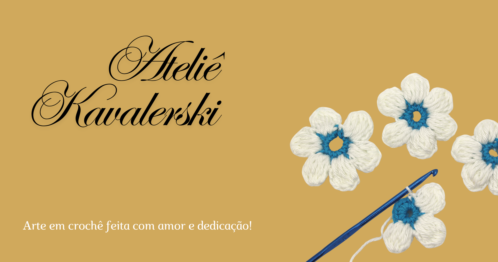

Onde cada ponto conta uma história

O Ateliê Kavalerski nasceu do amor pela arte do crochê e do desejo de transformar fios
coloridos em peças que encantam e aquecem o coração. Cada criação carrega consigo horas
de dedicação, técnica apurada e um toque especial que só o trabalho artesanal pode
proporcionar.
Com anos de experiência em crochê, nossa missão é criar peças únicas que vão além da
decoração - são verdadeiras obras de arte que contam histórias e criam memórias afetivas.
De amigurumis encantadores a mandalas delicadas, cada ponto é dado com paixão e perfeição.
Trabalhamos com fios de alta qualidade, sempre buscando as melhores combinações de cores
e texturas para criar peças que sejam não apenas bonitas, mas também duráveis e especiais.
Cada cliente recebe uma peça exclusiva, feita especialmente para você ou para presentear quem você ama.
Cada criação é unica para cada cliente.
Fique por dentro das novidades e descubra o que estamos oferecendo no momento.
InstagramFaça seus pedidos e encomendas com a Crocheteira Joana Márcia.
Whatsapp